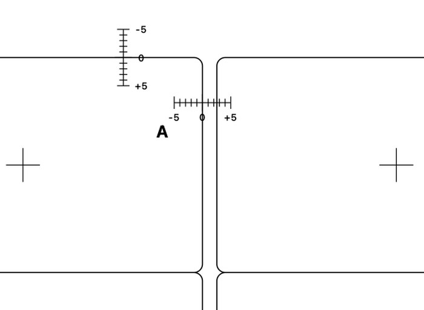
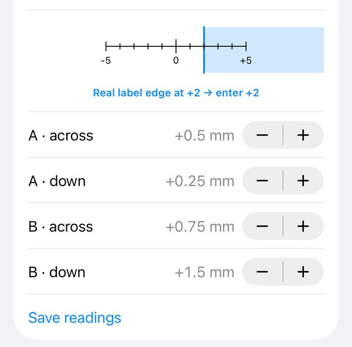

Why your labels print off-center, and how to fix it
Labels drift when the printer puts the page slightly away from where the file says. Usually it's one of three things: the page was scaled to fit, the printer shifts everything by a millimetre or two, or it stretches the page slightly as the paper feeds through. The first is a setting; the other two you can measure once and correct.
What is going on
- Scaling. "Fit to page" or "Scale to fit" shrinks the whole sheet by a few percent, so the top labels look fine and the bottom ones miss. Print at 100% or Actual Size.
- A fixed shift. Every printer has its own idea of where the page starts. A shift of 0.5 to 2 mm in one direction is common.
- Stretch along the paper path. On the black-and-white laser printer we tested, the page came out about 0.5% longer than it should. That is nothing at the top of a sheet and about 1.5 mm by the bottom, which is why the last rows are worse.
- Sheet-to-sheet variation. Each sheet feeds a little differently, about half a millimetre either way on that printer. No setting removes this, so the text should not run right up to the label's edge.
How to correct it in Labelfit
- Open Line up with your printer and tap Print test page. Use plain paper.
- Lay the printout on a label sheet, edges together, and hold both against a window.
- Labels A and B each carry two short scales across their edges. Where the real label's edge crosses a scale is the reading, in millimetres. Enter the four readings and tap Save readings.
- Print the test page again. Every scale should now read 0, give or take half a millimetre.


Two points in each direction let Labelfit work out both the shift and the stretch, so the bottom row is corrected as well as the top. The result is within about a millimetre, and Labelfit keeps text at least 2 mm in from every edge so the remaining wobble stays inside the label. Corrections are saved per printer.
Without the app
Print the label template's outlines on plain paper, compare it with a label sheet against a window, and adjust the page margins in your word processor by what you see. Some printers also have a registration or margin adjustment in their own settings. Either way, fix scaling first.
Labelfit on the App Store; test pages are always free.